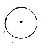
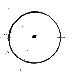

The building was a single room with floor to ceiling glass walls on all five sides. The ceilings were also glass, bringing in the sunlight which complimented the few electrical lamps in the room. Workbenches were set along three of the walls and doorways were centered on the remaining two. Tools and lab chemicals were scattered around the benches along with specimin jars and other containers.
In the middle of the room was a spherical oven with a glass door in front. It was supported at mid-height in the room by metal bars running from the floor to the ceiling. There was no cooking surface on the stove, but vents were spaced around the surface to expel heat.
The stove was cold, so I pulled open the door and looked inside. There were some scraps of wood sunk to the bottom of the stove with the charred remains of a book on top. I took the book out and flipped through the pages. From the few readable pages, I could make out D'ni writing. The book was larger in length and height than the other D'ni Books I have used, but thinner. On the very last page was a blank linking window.
I wondered what would happen if I touched it. Would it be like touching a large ink-blot, or would the pages of the book attempt to transport me to an empty void?
I decided that it wasn't worth the risk to test it, so I threw the book back into the stove and closed the door. The book was burned for a reason, so I should probably forget about it. Maybe the Writer created an unstable Age, or it became unstable after time. That is, if the Age even worked at all. I only had suspicions that there were Linking Books on Riven, but I had no actual proof that they had been created.
I walked over to the first door in the lab and opened it. This was the door that lead out to the metal walkway leading to the bridge.
Next to the other door was one of the pedestals with the large blue buttons. Was there a MagLev that went to this island? I opened the door and walked out to a concrete path. The path turned to the right and went down a rusted metal staircase. Far down below me, I saw the familar arrangement of a MagLev station. The twin rails lead off towards the strange looking island I had not yet explored.
I walked back into the building and closed the door behind me. I didn't want to leave this room until I was able to give it a thorough examination. There were more probably clues here than I would know what to do with. When I was done here, I would go on to the fourth island.
I turned back to the first workbench I encountered. There was a lingering odor that centered around this area. It was a rather repugnant chemical smell that I couldn't quite place. The smell seemed to be coming from a small object on the upper shelf of the bench. On one side of the object was a glass bowl while the other side had a wooden funnel leading to a tiny tube. The object resembled a pipe of some kind. The strong smell would validate the purpose of the object.
On the right hand side of the bench was a rifle. I could tell what it was almost right away because of the similarities to weapons on Earth. It had a single metal barrel with a handle on the middle bent at a ninety degree angle. At one end was a large handle mechanism with a trigger for the index finger, and at the business end of the weapon was a long knife blade that was either used to improve aim, or to merely stab one's enemy at close range. I held up the rifle and pointed it out towards several objects in the room for a test. I didn't dare attempt to fire it due to general rules of safety and also because I had no idea what the weapon used for amuniation.
Above the workbench were two lamps with decorative wood carvings mounted to the shades. I ran my fingers along the carvings and realized that they were made out of some sort of ivory, like an animal tusk or horn. I didnt' recall seeing any creatures on Riven that had these characteristics.
In the middle of the desk was a large book. To the left of the book was a single sheet of paper the same size as the book and one of the wooden eyes, like the ones I had seen back on the Jungle Island. I picked up the paper and read it.
87.7.28
Last week, while monitoring the situation of the villagers from the scope in my survey room, I observed one of the natives swim out to a small floating object that appeared to be floating, but anchored near the entrance to the bay. I ordered the object removed from the water for inspection. Several days later, however, I was surprised to see another floating there; the missing object had apparantly, and quite mysteriously been replaced by a new one overnight. I've long been aware of the existance of simialar artifacts on the villagers' island, but have paid little notice until now. Tomorrow I shall send surveyors to catalog the others.
I put the note down and looked at the eye. On the back of the eye was another one of the symbols...
I rolled the eye around on the desk but it didn't make any noises. The noises the other eyes made must be must have come from the sockets they were mounted in.
I put the note back on the desk, when I noticed the date. I took Atrus' journal out of my pack and took a look at the final entry which was dated 87.7.16, which was 3 days after I encountered Atrus on D'ni. If the Riven and D'ni calendars were identical, then this page was recent. At the very most it was four days old. I tried to remember what the data was when I left Myst Island?
The page was roughly the same size of the large journal. This was probably going to be the latest entry. I sat down on the stool in front of the bench and began to read the book, entry by entry.
It had taken me about fifteen minutes to read the book cover to cover. The weren't many entries, but they went back about five years. The book resembled a lab journal, with notes regarding constructions, experiments, and observations. But between these lab reports lie the true story. While I had learned about Riven's technological advances, I found much more information from the personal revelations, the comments, and the confessions. And most importantly , I found out who the journal belonged to.
The journal belonged to Gehn.
Specific references were made of Atrus and Catherine. Atrus was clearly referenced as the son of the author, and their escape from Riven was documented, which according to Atrus was the last time he had seen his father.
To summarize the journal, Gehn had been trying to create Ages, but the materials on Riven were not enough, or just barely enough. He had been working on a new Age to escape to because Riven was too unstable.
But because his books were not quite perfect, he required a means of using supplemental methods to make them work. The domes. The giant dome on Riven, and the smaller ones that I was now able to open was part of a power system that would literally pump electricity into the Books, enough power to make a safe link.
About a year and a half after the journal starts, he was able to link to a new world. He
had labeled the age as his
 rd Age.
The symbol he used to label the Age was familiar. It resembled the symbols that I had
found on the back of the eyes. Atrus had told me before that Gehn never named his Ages,
but he had numbered them. Perhaps these symbols were numbers.
rd Age.
The symbol he used to label the Age was familiar. It resembled the symbols that I had
found on the back of the eyes. Atrus had told me before that Gehn never named his Ages,
but he had numbered them. Perhaps these symbols were numbers.
Later on, Gehn finished construction of the link domes as he called them. To prevent unauthorised access to the books, he devised a coded access system. He wrote the combination in his journal, and I copied it into mine..
This must be another number, or maybe five numbers. The domes had a combination lock that used five sliders positioned in one of twenty-five possible positions. Five numbers, five sliders. So, if these were numbers, then logically none of the numbers listed were under 25.
As I continued to read, I found references to a group of rebels, known as the Black Moiety. This could have been the group that freed me from my prison. They used superstition and terror to achieve their goals, and apparantly Catherine was with them. There was also a mention that Gehn had misgivings about some of his advisors. An assistant was caught reading his journal, but since it was in English, there was little chance of any harm being done.
I re-read the journal again, trying to absorb the details. So many events happened, and Gehn only wrote about his most major accomplishments. In just under two years, he had created so many technological marvels and finally had a means of creating linking books.
I put the journal down and walked towards another lab bench. This one had a large magnifying glass positioned over a thin section of tree trunk. It would appear that Gehn was exmining the wood, maybe trying to see if it was of the proper quality to create a linking book. On the rest of the desk were mechanisms used for binding books. In the middle was a tray with lines of string for the binding process, and at the end of the table was a book press that squeezed together like a C-clamp. On the top shelf of this bench there were several blank books, some without their leather covers. I picked one up and looked through it. The pages were blank. There was no content, nor was there a linking window on the final page.
The final bench held a few more curious objects. There was a small chest of drawers sitting on the middle of the desk. I was only able to open the top drawer, which revealed several stones. The stones were very curious looking, like nothing I had ever seen before. Some with various colors, others in different shapes, including a dodecahedron.
Behind the cabinet was a glass sphere with a handle to the top. The sphere was one third full with water. By touching a button on the handle, I ignited a small flame underneath the sphere. Suddenly, the water inside the sphere bubbled and rose upwards, as if defying gravity. Gehn had mentioned this phenomenon in his journal. He believed that the water contained powerful bacteria that were sensitive to the heat. After a second or two, the flame died out and the water slowly settled onto the bottom of the sphere again. I had never seen anything like it before.
On the other end of the workbench were a pair of traps, identical to the one I had seen in the cave before. One was open, the other one closed shut. Along the top shelf of the bench, I found three specimin containers, two of which contained the red frogs I had seen earlier, floating in a greenish fluid. Gehn had mentioned these creatures in his journal as well. He called them Ytrams. He used them as an extract for his pipe, and the rebels had used them to make poisoned darts.
I picked up one of the containers and sniffed it. I then walked back to the first workbench. The odor coming from the pipe was identical to the smell of the preserved Ytrams. I wondered if Gehn visited this place often. I wouldn't think that he'd leave his pipe here if he didn't intend to come back for it.
Now that I knew I was in Gehn's lab, I went back to my journal to compare my earlier notes. Gehn's journal mentioned 5 distinct guilds: the Maintainers, the Educators, and Surveyors, the Bookmakers, and the Builders. One of the stained glass images I saw in the Gate Room showed 5 men positioned under Gehn like a representation of a chain of command. It seemed like Gehn was not only trying to recreate Books, but to also emulate the D'ni society as much as possible.
The D'ni society was composed of Guilds. Each Guild mastered one skill essential to the well being of the D'ni. Atrus had mentioned the Guilds before, and had listed a few of them off to me casually. The Guilds of Maintainers, Caterers, Geologists. Each Guild was lead by a Guild Master. If I were to remember correctly, there were about 18 Guilds on D'ni.
But Gehn had apparantly needed only five, or perhaps the smaller size of the Riven population didn't make having 18 different guilds feasable. From the notes I made of the image of the Guild Masters and the titles of the Riven Guilds, I drew the following conclusions....
I picked up Gehn's journal and reread it again. I went over the entries in again in case I missed anything.
In the beginning of the journal, Gehn has worked on experimenting with the fissue on Riven, the one Cathering and Atrus had used to escape many years ago. The fissue has since been covered up and has been forgotten. The fissue was probably the metal covered area next to the linking point where I arrived.
Gehn has an obsession with the number 5. Riven was his 5th Age, and he feels that it is the perfect number. The D'ni also use a base 5 number system. They also use a symbolic system for specifying colors with six primary symbols. Those symbols were identical to the symbols written across the surface of the linking domes.
 



D'ni Color Symbols
Gehn constructed the holographic projector systems very recently. There were probably more on the islands that I hadn't discovered yet. They plans he drew in the journal showed a simple consutrction, with the metal cage surrounding the area the holographic image appears in.
Gehn has nearly completed his second Age since starting this journal. The Age is
designated as the
 th.
Unfortunately, he was unable to properly research the origins of the
th.
Unfortunately, he was unable to properly research the origins of the
 rd Age.
While he created the Age, he was unable to determine the exact methods and D'ni phrases
that were used to make the Age the way it currently was. He was writing Ages, but he
wasn't learning from them.
rd Age.
While he created the Age, he was unable to determine the exact methods and D'ni phrases
that were used to make the Age the way it currently was. He was writing Ages, but he
wasn't learning from them.
On 87.6.27, the tremors that plagued Riven had decreased. According to Atrus' journal, Atrus had managed to make Riven more stable on 87.6.18. Further proof that similar calendars are being used on D'ni and Riven.
Gehn is still unaware of the location of the Moiety hideout. He has captured one rebel that had a strange glass artifact. This artifact allowed the rebel to use one of Gehn's Linking Book without the aid of external power sources. Gehn was unaware of where this material came from.
I placed the journal back on the desk and took a final look around the lab. Considering that the walls and ceiling were made of glass, I couldn't imagine there would be too many places to hide anything around here. I had gone over almost everything there was to examine.
I tried to close the cover of the vent I had entered the room from, but the latch had broken. I checked the lab benches for something I could use to hold the vent closed, but came up empty handed. Whoever would come in here next would know (or at the very least, suspect) that someone was in here.
I made sure everything was in order, just as it was when I arrived and walked to the second doorway. I pressed the blue button on the pedestal to summon the Maglev. I then left the lab, closing the door behind me.
I could see the Maglev gliding into the bay as I made my way down the staircase. I was on the landing by the time the door opened and I jumped inside. The craft had barely rested at its destination before I rotated it for another trip. The fourth island lay directly ahead of me. I pushed the control lever forward, and the Maglev began its trip back to the island it just came from.